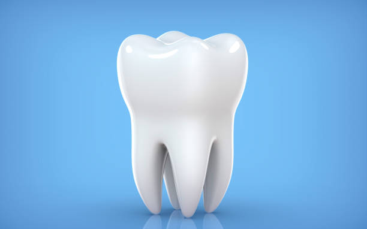
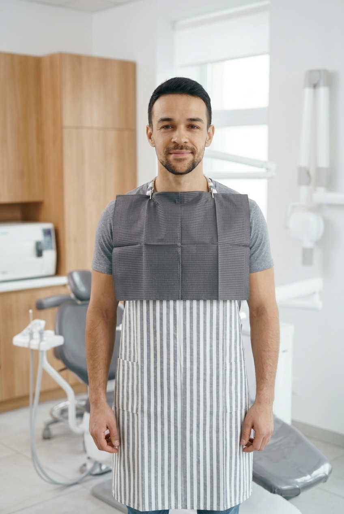
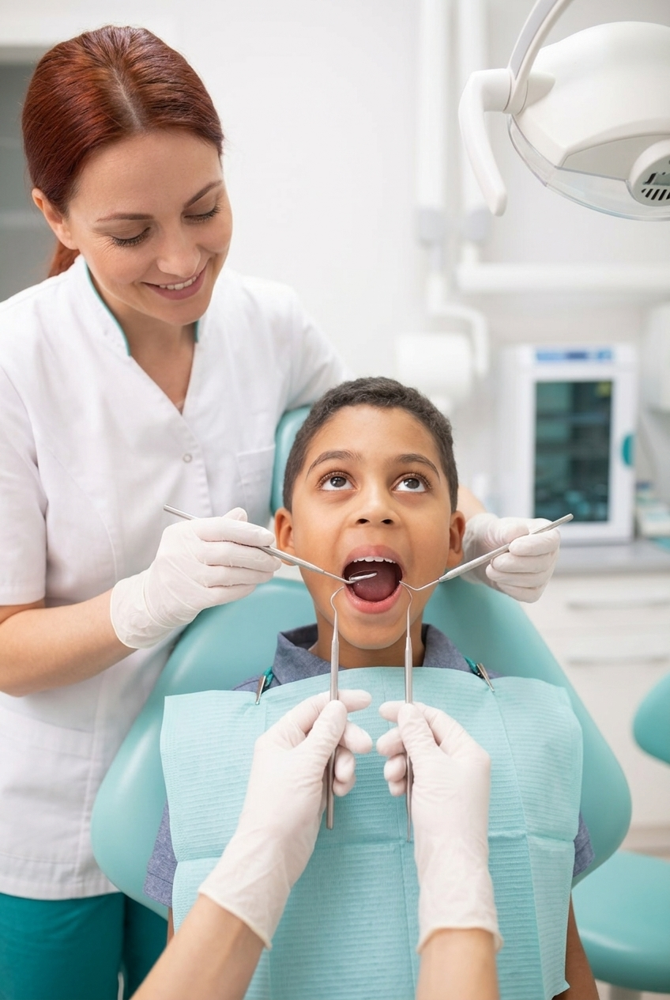
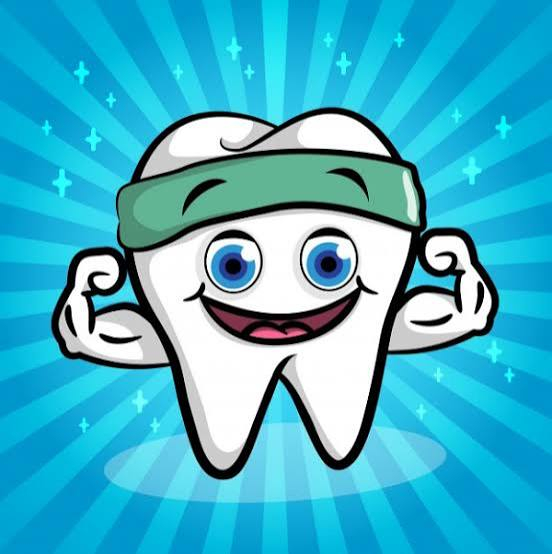
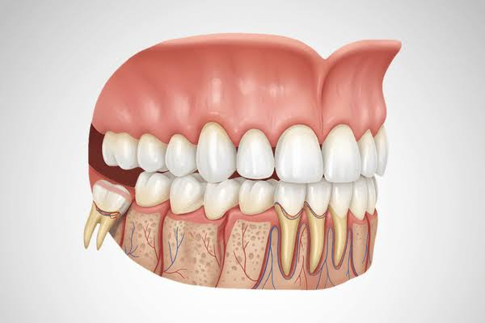
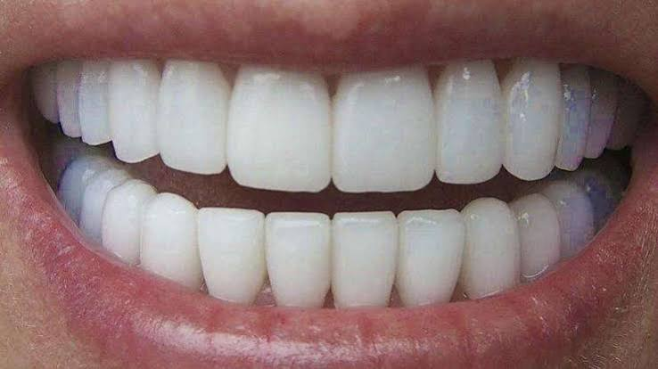

O consumo excessivo de açúcar pode prejudicar a saúde dos dentes,
pois as bactérias presentes na boca transformam o açúcar em ácidos que
desgastam o esmalte dentário, causando cáries.
Para manter os dentes saudáveis, é importante ter uma alimentação equilibrada,
reduzir o consumo de doces e refrigerantes e manter uma boa higiene bucal,
escovando os dentes e usando fio dental diariamente.






A escova de dentes deve ser trocada
a cada 3 meses ou antes, se as cerdas estiverem desgastadas. Também é
importante trocar após uma doença,
para evitar a reinfecção.